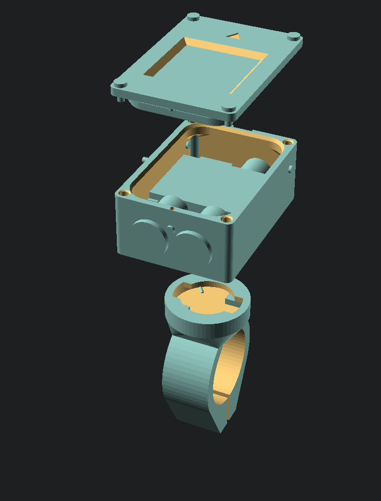

BTS CIEL option IR · Épreuve E6 · Valorisation de la donnée et cybersécurité
Surveiller la pression des pneus, du vélo à une flotte de chariots élévateurs : conçu et attaqué en simulation avant d'exister
Thibault MORRETTON
Projet individuel · capteurs TPMS BLE, boîtier e-paper, application Web Bluetooth · passerelles MQTT, réseau d'usine segmenté, supervision
Le besoin et le produit
Une crevaison lente se remarque souvent quand le pneu est déjà presque à plat
2 capteurs de pression vissés sur les valves · 1 boîtier de guidon à écran e-paper · 1 application web
| Produit | Prix indicatif | Afficheur dédié |
|---|---|---|
| SKS Airspy | ≈ 100 € la paire de capteurs | Non, smartphone ou compteur |
| Quarq TyreWiz | ≈ 250 £ la paire | Non, smartphone ou compteur |
| Ce projet | ≈ 89 € le kit | Oui, e-paper |
Lisible en plein soleil
E-paper réflectif, sans rétroéclairage ; une image affichée ne consomme rien.
Sans smartphone
L'application ne sert qu'aux réglages et à l'historique.
Compteur intégré
Vitesse et distance par aimant de rayon et interrupteur reed.
Contexte industriel
Le même système surveille une flotte de chariots élévateurs ; le vélo devient le démonstrateur
| Existant (vélo) | Version industrielle (entrepôt) |
|---|---|
| 2 capteurs TPMS BLE | 4 capteurs « poids lourd » (0 à 13 bar) par chariot, même trame |
| Boîtier de guidon | Afficheur embarqué du cariste |
| Logique : trame, vraisemblance, alertes, fuite | Réutilisée telle quelle par le serveur et la supervision |
| Liaison radio capteurs → boîtier | Passerelles BLE → MQTT au plafond, une par zone |
| Serveur de flotte (vélos de location) | Reçoit aussi les chariots, par MQTT sur TLS |
| — | Réseau d'usine en 4 zones, pare-feu, NTP, syslog |
Sécurité au travail
Un pneu sous-gonflé rend le chariot instable, surtout charge levée ; il s'use et peut éclater.
Pneus gonflables, 7 à 10 bar
Pas les bandages pleins des chariots d'intérieur. Capteurs « poids lourd » : hypothèse à confirmer.
Une vraie infrastructure
Zones et conduits (IEC 62443), MQTT, certificats, maquette Docker de 10 conteneurs.
Cahier des charges
Six exigences mesurables guident toute la conception
entre le passage sous 0,5 bar et l'alerte CREVAISON (bip + LED + écran)
pente de la pression qui déclenche FUITE LENTE, calculée sur 10 à 20 min d'historique
d'autonomie pour le boîtier (LiPo 500 mAh), en visant plusieurs semaines
nécessaire en roulant : pression, température, piles, vitesse et distance sur l'e-paper
liste blanche, vraisemblance, contrôle du rythme, liaison app appairée et chiffrée
Web Bluetooth : réglages, courbes, fuite sur plusieurs jours, export CSV ; iPhone via Bluefy
Architecture
Trois éléments reliés par deux liaisons radio : l'une subie, l'autre maîtrisée
Safari n'implémente pas Web Bluetooth : sur l'iPhone, la page s'ouvre dans le navigateur Bluefy. Flutter a été écarté, car compiler pour iOS exige un Mac.
Matériel
Le matériel est commandé pour 86,61 € TTC, mais pas encore reçu
| Lot de 2 capteurs TPMS BLE | 22,19 € |
| Seeed XIAO nRF52840 | 11,99 € |
| E-paper WeAct 1,54″ (SSD1681) | 8,49 € |
| LiPo 3,7 V 500 mAh | 5,59 € |
| Aimant de rayon + reed PS-3150 | 3,95 € |
| 2 boutons étanches, buzzer, LED, joints, connecteur | 7,52 € |
| Frais de port | 26,88 € |
| Total TTC (AliExpress, 20/10/2026) | 86,61 € |
À commander en plus : 2 MOSFET canal N, 1 diode 1N4148, résistances. Sur place : imprimante 3D, fer à souder CMS, oscilloscope ; pas de mesureur de consommation.
Ajouté le 24/10, pas encore chiffré : baromètre GY-BMP280, interrupteur TPS22918, 2N7002, 100 kΩ, 1 MΩ, 2,2 kΩ, pastille ePTFE Ø 10 mm. Broches libérées : fil BUSY de l'écran supprimé, deux boutons sur D5.

Boîtier mécanique · OpenSCAD
Un boîtier de 46 × 64 × 28 mm, dimensionné à partir des composants

Forme de compteur GPS, en PETG, imprimé sans support ; hauteur imposée par les écrous des boutons de 12 mm.
Joint torique radial 53 × 1,8, écrasé 21,3 %
15,7 à 27 % avec ±0,1 mm d'erreur d'impression ; gorge remplie à 66 %. Un joint plat dépendrait du serrage des vis.
Collier vissé, boîtier amovible sans outil
Collier et bride serrés par une vis M3, cales de 22,2 à 31,8 mm ; le boîtier s'enclenche par une glissière à cran.
Aucune interférence, parois ≥ 2 mm
10 pièces contrôlées contre chaque composant et entre elles : 7 défauts corrigés ; évent ePTFE sous le fond pour le baromètre. Restent les jeux (test_jeux) et l'étanchéité.
Méthode
Sans matériel, le projet est devenu un jumeau numérique : la même logique tourne partout
logique/fuite.js
TPMS.pressionCompenseeBar = function (pressionRelBar, temperatureC) {
var absolue = pressionRelBar + 1.01325;
return absolue * 293.15 / (temperatureC + 273.15) - 1.01325;
};
firmware/tpms_boitier/src/logique/fuite.cpp
float pressionCompenseeBar(float pressionRelBar, float temperatureC) {
float absolue = pressionRelBar + 1.01325f;
return absolue * 293.15f / (temperatureC + 273.15f) - 1.01325f;
}
Le temps est toujours un paramètre : maintenantMs dans le simulateur, millis() dans le firmware. Une semaine se rejoue en quelques secondes.
Le monde simulé
Autour du boîtier, la simulation reproduit la physique, la radio et l'électricité
Pneu
Loi des gaz parfaits, échauffement au soleil et en roulant, perméation de la chambre, crevaison, fuite lente, pompe.
Atmosphère
Pression selon l'altitude : le capteur mesure par rapport à 1 013 hPa, d'où une erreur en montagne, que corrige le baromètre du boîtier. Météo heure par heure.
Vélo et cycliste
Poids, roulement selon la pression, air, freins, pentes ; 4 parcours réels autour de Lyon ; passages de l'aimant devant le reed.
Radio BLE
Distance, ombrage, masquage par la jante, canaux 37/38/39, collisions, Wi-Fi, brouillage, vélos voisins, pirate.
Électronique
LiPo et chargeur, courant de chaque composant selon l'état du boîtier, schéma animé ; température du boîtier, recharge coupée par grand froid ; batterie vide, boîtier éteint.
Temps reproductible
Pas fixes de 50 ms en roulant, 1 s au calme ; ≈ 12,7 µs par pas. Graine + actions horodatées : rejeu identique.
La donnée brute
Chaque capteur diffuse 18 octets en clair, décodés octet par octet
50 34 03 00 → 0x00033450 = 210 000 Pa → 2,10 bar
température, centièmes de °C :
02 08 00 00 → 0x00000802 = 2 050 → 20,50 °C
Ni compteur, ni signature : rien ne distingue une trame rejouée ou imitée d'une vraie. L'adresse fixe permet aussi de reconnaître un vélo.
Octets recalculés à l'ouverture par TPMS.encoderTrame (logique/trame.js). Format supposé, d'après github.com/schlumpf2009/TPMS : à confirmer à la réception des capteurs.
Chaîne de la donnée
De la trame à l'alerte, la donnée est filtrée, compensée, puis interprétée
Écran e-paper
Pression corrigée de l'altitude ; rafraîchi au plus toutes les 2 s, et seulement si l'image change.
Bip + LED
À l'apparition d'une alerte ; acquittement par appui long.
Application
Mesures toutes les 5 s, historique local sur plusieurs jours, export CSV.
Gaz parfait à volume constant : sans cette compensation, un pneu chauffé au soleil puis refroidi déclenchait une fausse fuite lente.
Valorisation de la donnée · baromètre
Une seule trame, deux pressions : l'une pour l'écran, l'autre pour l'historique
Le capteur retire 1 013,25 hPa fixes, le manomètre retire l'air réel. Exemple vérifié par un test : capteur 2,00 bar sous 846 hPa → 2,17 bar.
Pression « manomètre », celle de la pompe et des seuils. Capteur 1,70 bar à 1 500 m, seuil bas 1,8 bar : sans baromètre, le boîtier aurait bipé pour rien.
Pression du capteur, qui suit la quantité d'air. Sinon, descendre 1 000 m en 12 min (calcul) dépasserait trois fois le seuil de fuite lente. L'app retire aussi la correction (octet 19 de MESURES).
Le même BMP280 donne la température : recharge coupée hors de 2 à 43 °C (hystérésis 3 °C). Simulateur : à −5,7 °C dehors, coupée 90 min ; reprise ≈ 11 min après le retour à la maison.
Écran du boîtier
Ces écrans sont dessinés par le code destiné au boîtier, au pixel près
200 × 200 pixels noir et blanc, soit 5 000 octets d'image · police 5×7 identique en JavaScript et en C++ · chiffres de 28 pixels de haut (≈ 3,9 mm) · valeurs d'exemple.
Valorisation de la donnée
Le boîtier prévoit le regonflage : 16 jours annoncés au 3e jour, seuil atteint vers le 18e
Allure schématique · mesure sur 3 semaines simulées : chambre butyle, 2,2 bar, seuil 1,8 bar ; erreur finale 1 à 2 jours.
jours = (P − seuil) / perte par jour
1 relevé compensé à 20 °C par sortie · au moins 4 relevés sur 2 jours · « stable » sous 0,005 bar/j · un regonflage efface les relevés
dernière ligne : « REGONFLER AV 12J AR 15J »
Statistiques par jour et par semaine
- distance et minutes de roulage
- pression moyenne en roulant, pondérée par le temps
- pression minimale
- regonflages repérés (hausse > 0,2 bar)
- minutes en alerte
- énergie consommée par le boîtier
Calculées à partir de l'enregistrement (logique/statistiques.js), page Données du simulateur.
Analyse de risques · EBIOS RM simplifiée
15 scénarios pour le kit : un seul reste élevé, le pistage, hors de portée du boîtier
Avant les mesures
gravité (vertical) × vraisemblance (horizontal)
Après les mesures
Avec les capteurs v2 proposés : S12 passerait de 9 à 3 (faible).
- S1Écoute et traçage du vélo
- S2Capteur d'un vélo voisin
- S3Usurpation d'adresse
- S4Rejeu de trames
- S5Brouillage radio
- S6Brouillage + imitation du rythme
- S7Appairage malveillant
- S8Code d'appairage par essais
- S9Réglages absurdes
- S10Vol des données de l'app
- S11Fausse intrusion (déni de service)
- S12Pistage par un réseau de récepteurs
- S13Pirate synchronisé
- S14Inondation d'annonces
- S15Effacement des traces du journal
Démonstration de l'attaque
Une carte à environ 5 € suffit pour se faire passer pour un capteur
- Le pirate écoute l'airUne application de scan BLE ou une carte ESP32 lit les annonces en clair.
- Il recopie l'identité du capteur avantNuméro 0x80 et adresse fixe EA:CA:3F:1B:07.
- Il émet 0,3 bar avec cette identité, une trame par secondeLe vrai capteur continue d'annoncer 2,2 bar toutes les 3 s.
- Variante : le rejeuIl renvoie octet pour octet des trames enregistrées la veille, pneu bien gonflé, pour masquer une vraie crevaison.
Même défaut que celui démontré sur les TPMS automobiles : Rouf et al., USENIX Security 2010. Le pirate est simulé par simulateur/sources/pirate.js.
fausse crevaison affichée à l'avant
Les parades
Trois filtres empilés : la fausse crevaison du pirate n'est jamais acceptée (0 sur 300 décalages)
| Protections actives | Résultat |
|---|---|
| Liste blanche seule | fausses trames acceptées |
| + vraisemblance | le pirate rapide finit par passer |
| Les trois | SIGNAL SUSPECT ; 0 fausse valeur acceptée sur 300 décalages |
| Rejeu pour masquer une vraie crevaison | alerte dans 120 cas sur 120, au pire en 5 s |
Limite assumée : une fausse pression proche de la vraie (0,8 à 1,5 bar) peut s'afficher jusqu'à 6 s avant le SIGNAL SUSPECT.
intrusion signalée
Nouvelles attaques
Quatre menaces de plus : chacune est détectée ou bloquée, avec sa limite
| Attaque simulée | Ce que fait le boîtier | Limite |
|---|---|---|
| Pirate synchronisé émet en même temps que le vrai capteur, à 1 m |
Le délai aléatoire de 0 à 10 ms de la norme BLE empêche la superposition exacte : le boîtier reçoit les deux trames, SIGNAL SUSPECT en 1 s | Entre deux quarantaines, une vraie crevaison reste masquée 98 s sur 240 s |
| Inondation 500 annonces/s à adresses aléatoires |
« Radio saturée » détectée en 16 s, SATURE affiché, ligne au journal ; 22 à 23 trames de nos capteurs encore acceptées en 60 s | On la détecte, on ne peut pas l'empêcher. Sans liste blanche : 0 trame correcte, état INTRUSION |
| Homme du milieu à l'appairage de l'application |
Sans code (Just Works), le pirate règle le seuil bas à 0,5 bar sans que le cycliste le voie. Avec le code à 6 chiffres affiché sur l'e-paper : 3 essais faux, blocage 1 min | ≈ 5 mois d'essais sans interruption pour une chance sur deux |
| Téléphone appairé volé ou page piégée dans Bluefy (24/10) |
Couper une protection ou changer de capteur : rien n'est appliqué, l'écran affiche CONFIRMER ? et la liste ; appui long sur le bouton 2 du boîtier, sinon annulé (autre bouton, 30 s, veille, déconnexion) | La commande ACQUITTER de l'app ne confirme pas. Qui a le vélo et le téléphone déverrouillé peut tout changer |
Avec les capteurs v2 proposés : trames du pirate synchronisé ignorées, crevaison signalée en 4 s ; 163 à 173 trames rejouées refusées en 4 min.
Vie privée
Avec 20 récepteurs à 40 €, un espion relie 10 trajets en 5 jours au même vélo
2 adresses fixes suivies, 89 passages chacune. L'espion en déduit un départ chaque matin à 7 h 46 près du même récepteur, et un retour à 17 h 31.
Aucune adresse vue sur plus d'un trajet : des passages isolés, impossibles à relier entre eux.
S12 : 3 × 3 = 9, élevé. Aucune parade possible avec des capteurs du commerce : adresse fixe émise en clair, programme non modifiable. Trajets et horaires sont des données personnelles (RGPD). Risque signalé dans la notice ; la vraie correction demande des capteurs v2.
Récepteurs simulés le long des parcours en ville, avec le bilan de liaison du modèle radio (simulateur/sources/mouchards.js, page Vie privée).
Proposition · capteurs version 2
Des capteurs v2 qui changent d'adresse et signent chaque trame
26 octets : tient dans une annonce BLE de 31 octets · clé secrète de 16 octets par capteur, partagée avec le boîtier à l'appairage (QR code dans la boîte)
entre deux changements : 2 octets au hasard ‖ HMAC(clé, 01 ‖ alea) tronqué à 3 octets ; le boîtier reconnaît son capteur en recalculant.
Un compteur déjà vu est refusé : 163 à 173 trames rejouées refusées en 4 min, crevaison signalée.
de chances qu'une fausse trame passe, par essai. Les trames en clair sont ignorées : plus besoin du contrôle du rythme.
Proposition simulée (logique/trame2.js, traduite en C++), non réalisée : les capteurs commandés restent en version 1.
Traçabilité
Le journal de sécurité est chaîné par SHA-256 : une ligne modifiée casse la chaîne
SHA-256 et HMAC écrits en JavaScript et en C++, vérifiés avec les vecteurs officiels (FIPS 180-4, RFC 4231).
64 lignes, ≈ 15 Ko
sur 256 Ko de RAM ; l'empreinte de la dernière ligne oubliée sert d'ancre.
Tout réécrire en recalculant les empreintes passe la vérification. Parade : la dernière empreinte est copiée sur le téléphone ; un journal réécrit ne la contient plus.
Mode flotte · cas entreprise
En location, les mesures de 20 vélos deviennent une tournée de maintenance triée par priorité
de flotte simulés en 31 s et envoyés au serveur
acceptés sur 1 120, soit 40 356 mesures
en moyenne entre deux regonflages (SQL, fonction LAG)
pour repérer une fuite de −0,15 à −0,5 bar/j ; 0 fausse alerte sur 6 × 21 jours
Mode flotte · sécurité de l'API
Le serveur n'accepte que des lots signés, récents et jamais vus, et ne répond qu'aux comptes autorisés
V01'; DROP TABLE… est refusé, sans effet| Banc d'essai · lot envoyé | Réponse |
|---|---|
| Lot valide | 201 |
| Même lot rejoué | 401 |
| Pression modifiée après signature | 401 |
| Signé avec la clé d'un autre vélo | 401 |
| Lot vieux de 2 min | 401 |
| Pression à 12 bar | 400 |
Comptes : mot de passe haché par scrypt ; session de 15 min sans requête, 8 h au plus, vraie déconnexion (401) ; rôles technicien / gestionnaire (403)
HTTPS : TLS 1.2 minimum, HSTS ; certificat vérifié, jamais ignoré
RGPD : pas de position en location ; mesures 30 j, journal 6 mois
Limites : sessions en mémoire, pas de second facteur, certificat auto-signé, secrets de démo publics, débit limité en mémoire. 133 tests du serveur.
Version industrielle · réseau
Un réseau d'usine en 4 zones, reliées par un seul pare-feu qui refuse tout sauf 5 conduits
Version industrielle · collecte
Des passerelles BLE → MQTT, et tout le réseau de l'usine dans une maquette Docker
pare-feu, courtier, supervision, NTP, syslog, 3 passerelles, poste, entrepôt simulé
docker compose up
32 pneus, 3 zones : quais, allées, cour
d'écart d'horloge NTP mesuré sur les passerelles
Pièges trouvés en faisant marcher la maquette : Docker masquait l'adresse des paquets routés (réponses perdues, vu avec tcpdump), et choisissait lui-même le réseau du port publié.
Version industrielle · démonstration
13 essais sur 13 : chaque couche suppose que la précédente peut tomber
| Couche | Essai | Résultat |
|---|---|---|
| Pare-feu | nmap d'une passerelle depuis le bureau | 4 ports filtrés, compteur +4 |
| Pare-feu | Bureau → courtier ; atelier → supervision | bloqués, comptés |
| Courtier | Sans certificat ; certificat d'une AC pirate | refusés (alertes TLS 116 et 48) |
| Courtier | Certificat volé de la passerelle 1, au nom de la 2 | jeté par les ACL, rien reçu |
| Serveur | Certificat volé : capteur inconnu, 20 bar, rejeu de 3 h, lot incohérent | rejetés ; pression affichée inchangée |
| Continuité | Passerelle 2 coupée net | « hors ligne » en < 1 s |
| Continuité | Courtier arrêté 30 s | lots rattrapés, 0 perte |
| Serveur web | Clé privée du courtier demandée | 403 |
Le serveur sert les fichiers du dépôt, monté en entier dans la maquette : …/certificats/courtier.cle répondait 200. Puis /Entrepot/… passait encore (disque Windows insensible à la casse). Corrigé, 2 tests, essai n° 4.
8 scénarios réseau
S24 à S31 dans l'analyse de risques : aucun ne reste élevé ; deux dénis de service restent moyens.
node entrepot/demonstration.js
Limites : toutes les zones sur un seul PC ; pas de révocation des certificats ; NTP non authentifié ; pas de limite de débit par client MQTT.
Ce que la simulation a appris
La simulation a révélé 11 défauts, corrigés avant de recevoir le matériel
| Où | Défaut observé | Correction |
|---|---|---|
| Sécurité | Pirate + écoute par fenêtres : une fausse valeur passait dans 145 décalages sur 300 | Temps de calcul plafonné à 5 s, aucune confirmation tant que le rythme est douteux |
| Sécurité | Vraie crevaison prise pour une intrusion : SIGNAL SUSPECT au lieu de CREVAISON pendant 60 s (1 cas sur 6) | Trames rapprochées normales si la pression baisse : 0 fausse intrusion sur 12 crevaisons |
| Radio | Capteur garé (une annonce par minute) jamais entendu : verrouillage de phase avec la fenêtre | Fenêtre placée de façon pseudo-aléatoire dans chaque période |
| Radio | Crevaison signalée jusqu'à 34 s après, avec une fenêtre variable de 2 s | Fenêtre de 3 s + écoute renforcée de 15 s : 9 s au pire |
| Alertes | Fausse alerte « capteur perdu » à l'arrêt et juste après une quarantaine | 60 s en roulant, 600 s à l'arrêt ; silence compté depuis la fin de la quarantaine |
| Alertes | Fausse perte en montée lente (3,5 à 4,3 km/h) : 8 alertes en 60 h, le capteur se croit à l'arrêt | Délai de 60 s seulement au-dessus de 10 km/h, sinon 10 min : 0 fausse perte |
| Alertes | Alerte de pression basse rallumée en boucle autour du seuil (nuit fraîche, bruit) | Hystérésis de 0,05 bar avant d'éteindre l'alerte |
| Donnée | Fausse fuite lente : un pneu chauffé au soleil qui refroidit perd de la pression | Historique compensé en température (ramené à 20 °C) |
| Réglages | Circonférence par défaut fausse de 4 %, seuils fixes inadaptés au vélo de route | Circonférence réelle et seuils à 80 % et 125 % de la pression choisie |
| Modèle | Vélo garé en pente qui dévale et réveille le boîtier | Béquille dans le modèle du vélo |
| Modèle | Freinage à l'arrêt qui chauffait la jante | Chaleur de freinage proportionnelle à la vitesse |
Compromis énergie / latence
Fenêtre d'écoute de 3 s : pire délai d'alerte ramené de 34 s à 9 s, pour 63,7 jours d'autonomie
Délai entre le début d'une crevaison (0,15 bar/s) et la première alerte · 60 décalages
| Fenêtre / 5 s | mAh/jour | Autonomie |
|---|---|---|
| 1 s | 4,729 | 95,2 j |
| 2 s | 5,896 | 76,3 j |
| 3 s (retenu) | 7,063 | 63,7 j |
| 5 s (continue) | 9,396 | 47,9 j |
Journée type de 7,063 mAh (1 h de roulage, 15 min d'éclairage) · LiPo 450 mAh utiles
Crevaison : état CREVAISON 0,7 s à 6,7 s après le passage sous 0,5 bar (médiane 1,7 s), EF-09 tenue. Cas défavorable (2 h de roulage, 2 h d'éclairage, écoute continue) : 13,7 jours, ENF-01 tenue.
Une semaine simulée
Une semaine entière : 12 sorties, 0 minute d'alerte, batterie à 92,6 % avant la recharge
Parcours choisi : boucle des berges du Rhône (lyon-ville), graine 8 · 14 événements par semaine · calcul de la semaine ≈ 41 s.
de roulage
du temps en veille
≈ 37 mAh en 6,6 jours, sans éclairage
de batterie après la recharge du dimanche
trames acceptées
d'alerte sur la semaine
Vérification
717 tests JavaScript et 136 tests C++, relancés par GitHub à chaque push
GitHub Actions, à chaque push
Une tâche JavaScript (Node 24) et une tâche C++ : la logique du firmware est compilée avec g++ puis exécutée.
Vecteurs officiels
SHA-256 (FIPS 180-4) et HMAC (RFC 4231), en JavaScript et en C++.
De bout en bout
Crevaison, pirate, semaine type, pistage v1 / v2, baromètre avec et sans évent, recharge par grand froid, flotte envoyée au serveur, lot signé en HTTPS, session qui expire, client MQTT contre un faux courtier ; rejeu identique d'un scénario. Plus les 13 essais sur la maquette réseau.
Démonstration
Démonstration en direct : quatre scénarios dans le simulateur, puis l'entrepôt
- Sortie normaleVue d'ensemble : écran du boîtier, vitesse, distance, trames reçues.
- Crevaison arrièrePneus : chute de pression, état CREVAISON, bip et LED.
- Attaque pirateRadio et sécurité : protections coupées, fausse crevaison ; protections actives, SIGNAL SUSPECT.
- Semaine typeAvance rapide jusqu'au dimanche : batterie, veille, export CSV.
- EntrepôtSupervision des chariots : lots piégés rejetés, passerelle coupée vue « hors ligne » ; sur la maquette, les 13 essais.
titilyonnais.github.io/tpms-velo/simulateur/
Ouvrir l'applicationtitilyonnais.github.io/tpms-velo/app/
Ouvrir le simulateur de l'usinetitilyonnais.github.io/tpms-velo/entrepot/simulateur.html
Rien à installer : des pages web, qui tournent aussi sans serveur.
Limites
Ce qui reste à valider, surtout avec le matériel
| Hypothèse | Valeur dans le code | Vérification prévue |
|---|---|---|
| Format des trames | 18 octets, fabricant 00 01, pression en Pa | Capture avec une application de scan BLE, comparaison à un manomètre |
| Plage des capteurs | 0 à 3,5 bar par défaut (réglable 5 ou 8) | Essai au gonfleur ; la fiche du vendeur ne la donne pas |
| Rythme d'annonce | 3 s en roulant, 60 s à l'arrêt ; rotation détectée dès 4,4 km/h | Mesure ; l'intervalle doit rester au-dessus de 2 s pour le contrôle du rythme |
| Consommations | valeurs de fiches techniques (63,7 j) | Résistance shunt et oscilloscope |
| Appairage sur iPhone | Bluefy, code à 6 chiffres | Essai avec l'iPhone et le boîtier réel |
| Firmware | 136 tests C++ exécutés sur PC, jamais sur la carte | Compilation Arduino, tests de la logique sur le XIAO |
| Ajouts du 24/10 | écran sans BUSY : 2,5 s / 0,6 s (× 2 sous 0 °C) ; D5 ≈ 0,48 V avec SW2 ; recharge coupée sous 2 °C | BUSY à l'oscilloscope au froid avant de couper le fil ; D5 au multimètre ; station météo ; aucun courant de charge au froid |
| Boîtier 3D | 10 pièces rendues, sans interférence ; jeux en paramètres ; évent ePTFE | Pièces test_jeux et essai_joint, impression, essai de l'évent, immersion 30 min à 1 m |
| Seuil d'inondation | 50 annonces inconnues par seconde | Compter les annonces BLE dans une rue fréquentée |
| Capteurs v2 | proposition simulée | Demande des capteurs dont on écrit le programme |
| Mode flotte | liaison supposée ; certificat auto-signé ; sessions en mémoire | Passerelle ou LTE-M ; Let's Encrypt, OpenID Connect en production |
| Entrepôt | capteurs « poids lourd » 0-13 bar, 8,5 bar ; portée BLE ≈ 24 m ; toutes les zones sur un PC | Choix des capteurs, plaque des chariots ; portée mesurée avec le démonstrateur ; vrais VLAN ou Packet Tracer ; révocation des certificats |
Conclusion
Un système conçu, testé et attaqué avant d'avoir reçu une seule pièce, du vélo à l'entrepôt
deviennent une pression corrigée et compensée, une prévision de regonflage, la tournée de 20 vélos, et la supervision de 32 pneus de chariots remontés par MQTT.
analysés (kit, serveur, réseau) ; 0 fausse crevaison acceptée sur 300 ; 13 essais réseau sur 13 ; seul le pistage du cycliste reste élevé, d'où la proposition de capteurs v2.
trouvés en simulation et corrigés, plus une faille de la maquette ; 717 tests JS et 136 tests C++ relancés à chaque push.
Prochaines étapes
Réception du matériel et commande des pièces ajoutées (BMP280, TPS22918, pastille ePTFE) → capture des vraies trames → mesure de BUSY au froid et des consommations → impression du boîtier → essais sur le vélo → mesure de la portée Bluetooth pour dimensionner les passerelles de l'entrepôt.
Merci. Questions ?